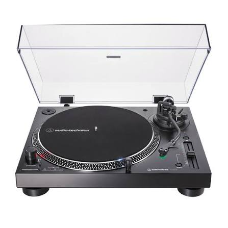
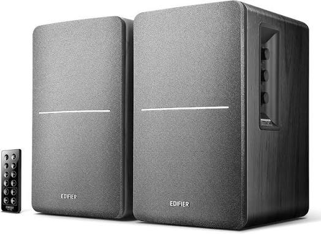

The turntable - Audio-Technica AT-LP120USB
An Audio-Technica direct-drive turntable. It is an amazing starter turntable that delivers great sound quality and allows you to place the stylus on the record without yourself.
Vinyl records and my Hip-Hop collection.

This is an entry-level setup, picked to fit my budget. I wanted records to sound good without spending a fortune, and I can upgrade piece by piece later. A selling point for me was manual stylus placement.

An Audio-Technica direct-drive turntable. It is an amazing starter turntable that delivers great sound quality and allows you to place the stylus on the record without yourself.

Edifier powered bookshelf speakers. The amplifier is built in, so there is no extra box to buy, and they come with a remote that allows you to control the volume and other settings.
| Do | Avoid |
|---|---|
| Store records upright to prevent warping | Placing the stylus on the record harshly |
| Hold by the edges to avoid touching the grooves | Storing the vinyl in the paper sleeve |
| Use a carbon fibre brush to remove debris | Leaving them in the sun |